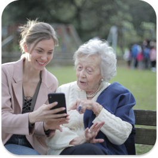

平台介紹
最無障礙使用的銀髮族線上諮商媒合提供安心、簡便的心理健康方案
-

心理諮商媒合
平台供心理諮商師免費註冊與合作，擁有符合銀髮族的直覺式使用介面、操作教學提示、線上與實體諮商選項，提供銀髮族群量身訂做並打破時空限制的諮商管道。
-

憂鬱症影片與專欄
提供台語/中文心理衛教影片及文章，幫助長輩了解及接納憂鬱症，增加病識感與主動就醫機率
-
心情溫度計自我檢測量表
提供線上多種語言的版本自我檢測量表，讓GDS-15檢測簡單化，進行更符合長者的憂鬱自殺防治
專案計畫
積極執行合作專案全方位保障樂齡族群心理健康
二手平板募集
與公益團體合作舉行二手平板募集活動，並與政府長照單位、公益團體洽談，結合關心獨居老人志工服務等機會，志工可輔助銀髮族使用平板參與筆友計畫，除增加平台使用人數，更能擴展、延續合作團體志工服務之成效。

「全世信福」活動
為「跨世代」信件交換活動，於年輕社群平台中發起寫信給長輩之活動貼文，並且分享信件內容可享有獎勵、抽獎等，除增加筆友計畫之曝光度，更能推動年輕族群關心家中長輩，或提升幫助長輩獲得相關電子設備之意願，達到「全世信福」的目標，此外分享之信件也將放置於照護平台頁面。
解憂雜貨店、家庭留言板
平台中的解憂雜貨店，以紀錄、書寫心事的方式，提供煩惱抒發的管道，並能設定公開、親友、私人發文、瀏覽模式，是專為銀髮族群設計之發文社群平台。而家庭留言板可提供所有家庭成員使用，為功能簡單操作容易之動態布告牆，長輩們可在此與家人留言互動交流。期望透過上述兩功能讓長輩獲得更多交流及洩壓的機會，並且也能提供促進家中世代間和睦溝通的解方。
特色功能
本團隊積極與各醫療院所、保險業者、
政府機構、腎友社群合作。
-
直覺式介面及操作教學
長輩使用好輕鬆
以長輩使用友善為出發點設計使用介面、操作教學網頁動畫、地區與中文/台語篩選、線上與實體諮商選項，並期待能與政府、社區心衛中心合作提供健保補助資源，提供銀髮族群完美整合、容易接觸、量身訂做並打破時空限制的諮商管道。
關於我們
團隊介紹
本團隊由政大四跨領域學生組成，包含外文、商院、傳播、數位內容、心理，希冀以跨領域的能力提出針對老年心理議題提出多元解決方案
聯絡資訊